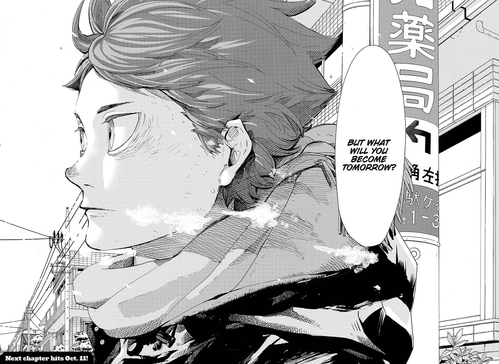
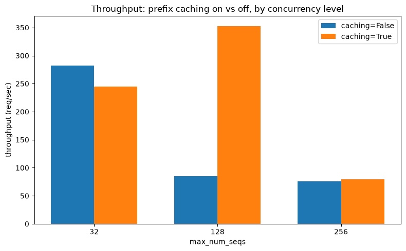
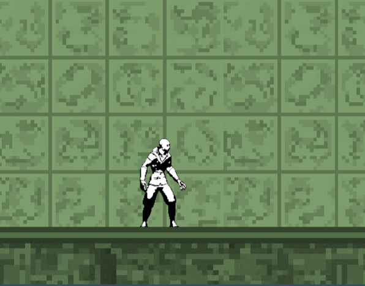

attempt1000
aug 2026This is my exploration in building a BERT-style transformer from scratch, with a twist. Still in progress; reading around to sharpen the approach.
secret list of more projects i want to work on
sisyphus game
lamp challenge
roblox game
This is my exploration in building a BERT-style transformer from scratch, with a twist. Still in progress; reading around to sharpen the approach.



This is a bit of a gag game a couple peers and I made at UCLA ACM Studio. The disorienting physics...and mismatched artstyle.. it's all part of the gamer experience.
This a physics-informed neural network based off the Bergman minimal model trained to predict Glucose/Insulin dynamics in a human body. Originated from my Biosystems Modeling class @ UCLA
Here, I use GoogleDeepmind's AlphaGenome API to compute the regulatory effects of aggregated genetic mutations. What an advent.